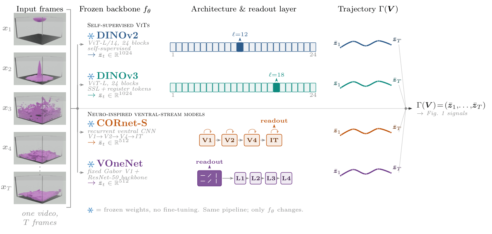
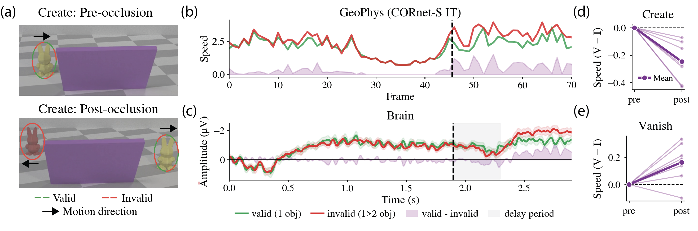
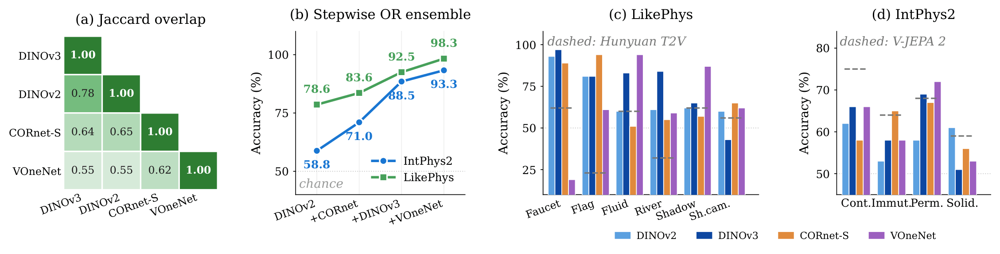

Humans flag impossible events in milliseconds. We show that physical plausibility is already written into the geometry of per-frame features from frozen image encoders, with no video or physics training.
While humans can identify physically implausible events within milliseconds, machine learning approaches addressing the same problem are extremely slow and expensive. They either rely on external multimodal-LLM judges or require ad-hoc modifications to the training procedure. In this work, we argue that indicators of physical plausibility are implicitly captured by five geometric properties of the per-frame embeddings produced by frozen image encoders. In aggregate, we call them GeoPhys.
First, these signals correlate with human EEG responses to two forms of object-permanence violation. Second, GeoPhys robustly discriminates physically implausible videos from realistic ones, achieving state-of-the-art physics-violation detection: 98.3% on LikePhys and 93.3% on IntPhys2, whereas V-JEPA 2, GPT-4o, Gemini, and twelve modern video diffusion models perform near chance. Third, used as a best-of-N verifier for physical alignment during generation, GeoPhys lifts MAGI-1 24B from 50.01% to 64.50% on PhysicsIQ at 1.5× lower wall-clock and 4.65× lower memory than the V-JEPA 2 world-model verifier.
Physical plausibility is a geometric property of feature trajectories through frozen image encoders. No video pretraining, no physics supervision, no learned ranker. Five kinematic signals on these paths set new detection records and steer video generation as a cheap verifier.
GeoPhys reads physical plausibility from the shape of a video's path through feature space. The same score runs unchanged across every backbone and every setting. There is no retraining and no fine-tuning.
Std of the frame-to-frame feature displacement. Flags objects jumping, vanishing, or moving inconsistently.
Mean turning angle between consecutive displacements. Linear motion stays straight; violations bend sharply.
Std of the turning angle. Separates steady, consistent trajectories from erratic ones.
Second-order difference of the trajectory. Captures abrupt changes in both speed and direction.
Error of a linear auto-regressive predictor. Spikes when a violation breaks the local low-dimensional structure.
The score runs on four frozen backbones spanning self-supervised transformers and explicit models of primate visual cortex. None is trained on video or physics. For each backbone we pick the readout layer that maximises the plausible-versus-violated curvature gap on a held-out split.
Backbones are complementary: each one specialises in a different signal and wins a different physics domain.

A useful signal should reflect a real phenomenon, not an artefact of pretraining statistics. We compare per-frame GeoPhys signals against human EEG on matched violation-of-expectation stimuli.
On two object-permanence scenarios, Create (one object enters an occluder, two emerge) and Vanish (two enter, one emerges), CORnet-S IT speed follows the contralateral delay activity, an EEG marker of visual working memory. Both rise and stay elevated after the violation, and the GeoPhys signal scales with the number of tracked objects.

Takeaway 1. GeoPhys signals align with human EEG responses to object-permanence violations and scale with object number, consistent with physical-violation perception.
Each benchmark presents matched pairs that share initial conditions, where one video is physically impossible. The task is to find it. Every frozen backbone beats every published baseline; an OR ensemble sets a new state of the art.
| Verifier | LikePhys | IntPhys2 |
|---|---|---|
| Best video diffusion model (Hunyuan) | 56.4 | – |
| GPT-4o | – | 53.8 |
| Gemini 2.5 Flash | – | 55.6 |
| V-JEPA 2 (1.1B, video-pretrained) | – | 57.5 |
| DINOv2 (L12) | 78.6 | 58.8 |
| DINOv3 (L18) | 80.8 | 60.5 |
| CORnet-S (IT / V1) | 78.2 | 61.1 |
| VOneNet (V1) | 77.6 | 61.7 |
| GeoPhys · Majority vote | 90.9 | 77.5 |
| GeoPhys · OR ensemble | 98.3 | 93.3 |
| Human | – | 96.4 |
A leave-one-scene-out linear probe on the same DINOv3 features reaches only 62.4% on LikePhys, so the gain comes from trajectory geometry, not the backbone alone.

Takeaway 2. GeoPhys unlocks physics-plausibility detection: every backbone surpasses all state-of-the-art baselines on both benchmarks (LikePhys 98% and IntPhys2 93%).
Beyond passive measurement, GeoPhys transfers to active control. As a best-of-N verifier it reranks a generator's candidates by plausibility, with no learned ranker and no PhysicsIQ-specific tuning.
On PhysicsIQ (MAGI-1 24B, video-to-video, N = 16) GeoPhys outscores every inference-time verifier and closes more of the gap to the oracle ceiling than a billion-parameter world model.
PhysicsIQ score (%) for the matched candidate pool. Bars scaled within the 40–75% range for readability; colours follow the paper's per-verifier legend.
1.5× lower wall-clock and 4.65× lower memory than the world-model verifier. At a fixed budget that is roughly 5× more candidates.
Drag the divider to compare the no-verifier baseline against the GeoPhys best-of-N selection on the same conditioning frame.
Before / after. Same scenario, same candidate pool. The baseline takes a random sample; GeoPhys reranks by plausibility.
Best-of-N selection across the five PhysicsIQ families (N = 16, MAGI-1 24B, V2V). Clips loop muted. Δ is the per-scenario PhysicsIQ gain over baseline.
Takeaway 3. Test-time compute scales physically plausible generation, but only with the right verifier. GeoPhys closes the gap to the oracle faster than world-model and other verifiers, at 4.65× less compute, using only frozen image encoders.
We do not claim frozen backbones represent or simulate physics. GeoPhys is a correlate of plausibility, not an implementation. The signals are time-symmetric, and the best-of-N result is bounded by candidate diversity. We see GeoPhys as a diagnostic for current generators, not a substitute for a genuine world model.
If you find this work useful, please cite it.
@article{interno2026geophys,
title = {GeoPhys: The Geometry of Physical Plausibility},
author = {Intern\`{o}, Christian and Pondaven, Alexander and Issa, Habon
and Pizzati, Fabio and Pinto, Francesco and Olhofer, Markus
and Laptev, Ivan and Torr, Philip and Simoncelli, Eero P.
and Hammer, Barbara and Klindt, David},
journal = {arXiv preprint arXiv:XXXX.XXXXX},
year = {2026},
url = {https://github.com/ChristianInterno/GeoPhys}
}
Replace arXiv:XXXX.XXXXX with the assigned identifier once the preprint is posted.